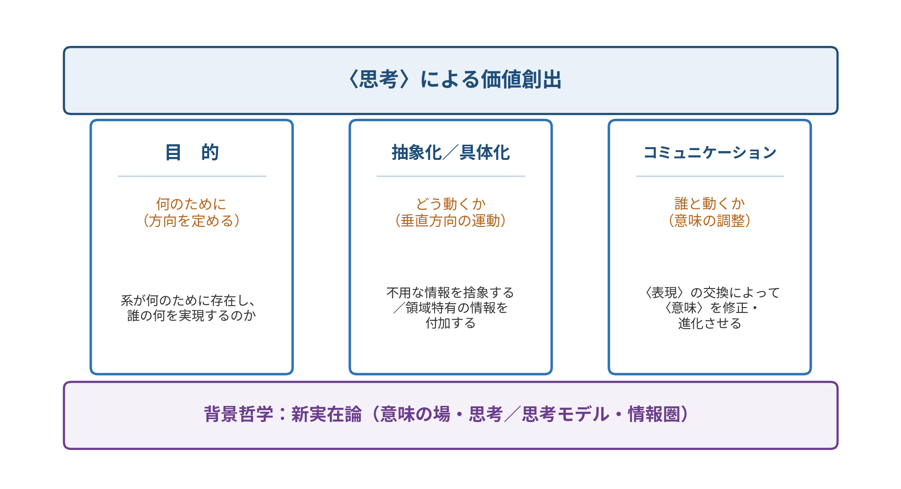
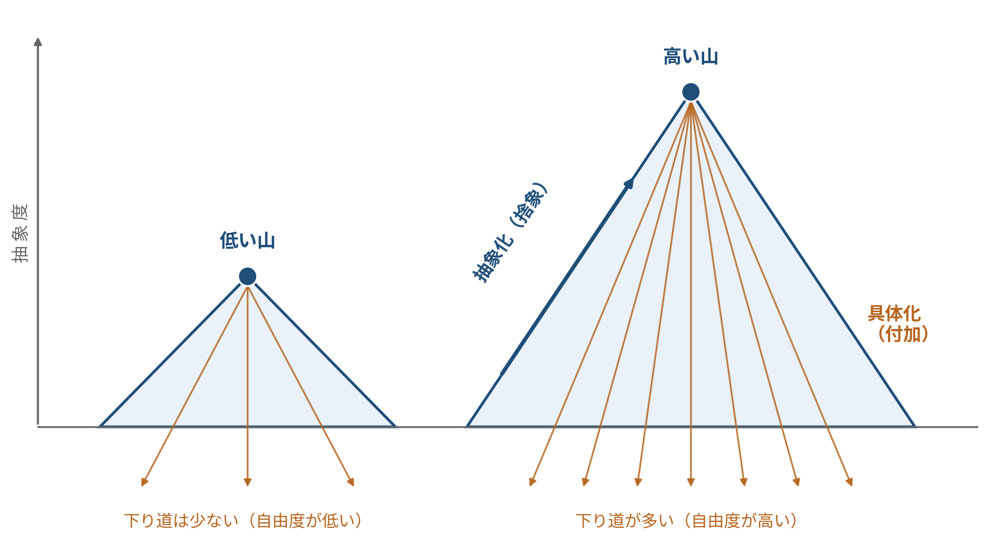
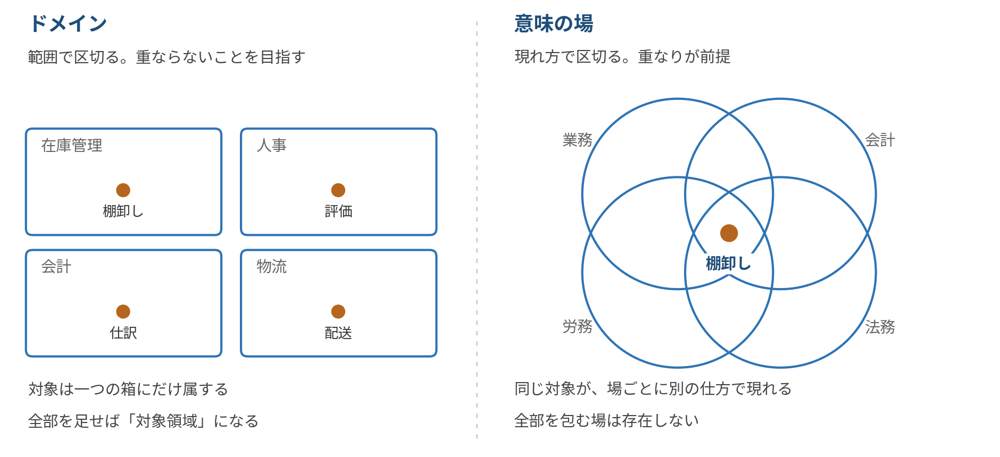

concept
押さえておくとよい事項
『思考の技法 2.0』の三本柱と、その背景哲学
ここでは、要求工学の研究を進めるうえで繰り返し立ち返ることになる概念を整理します。 順に読んでも、必要なところだけ拾っても構いません。各章の終わりに、理解を確かめる問いを一つずつ置いています。
1. 三本柱の全体像
もとの資料では抽象化とコミュニケーションの二つを挙げていましたが、ここではこれに「目的」を加え、 三本柱として整理します。三つは並列に並んだ項目ではなく、それぞれ別の問いに答えています。

- 目的は、どちらへ向かうのかという方向を定めます。方向がなければ、動いても近づいているのか遠ざかっているのかが分かりません。
- 抽象化／具体化は、垂直方向の運動です。抽象度を上げるか下げるか。この運動そのものが、思考の実質にあたります。
- コミュニケーションは、他者との間で意味を合わせる活動です。一人で考えるのでない限り、これなしには何も進みません。
三本柱の関係で、最も重要な一点
抽象化とは「不用な情報を捨てること」です。ところが、何が「不用」かは、それ自体では決まりません。 何のためかが定まってはじめて、何が不用かが決まります。
つまり、目的が抽象化の基準を与えています。目的なしに抽象化することはできません。
| 柱 | 答えている問い | 書籍での節 |
|---|---|---|
| 目的 | 何のために。どこへ向かうのか | 2.1 節 |
| 抽象化／具体化 | どう動くか。上げるのか、下げるのか | 2.2 節 |
| コミュニケーション | 誰と動くか。意味をどう合わせるか | 2.3 節 |
2. 第一の柱：目的
目的とは、系（システム）が何のために存在し、
誰の何を実現しようとしているのかの規定です
システムであれ、社会的な制度であれ、あるいは一つの研究であれ、それが何のためにあるのかを定めることが出発点になります。 ここが定まらないまま作業を始めると、途中で「これでよかったのか」という問いが繰り返し戻ってきます。
目的は、捨象の基準を与える
目的の役割は、意欲を高めることではありません。もっと具体的な働きがあります。
要求定義の場面を考えてみてください。関係者から話を聞くと、大量の情報が集まります。 そのすべてを要求として書き留めることはできませんし、そうすべきでもありません。どれを残し、どれを捨てるかを判断しなければなりません。
この判断の基準を与えるのが目的です。「この情報は、目的に照らして必要か」と問うことで、はじめて取捨が可能になります。 逆に言えば、目的が不明なまま情報を前にすると、何一つ捨てられなくなります。
実務上の含意
要求定義が難航しているとき、原因は情報の不足ではなく、目的の未定にあることがしばしばあります。 「もっとヒアリングしよう」ではなく「そもそも何のためのシステムか」に戻ることで、進むことがあります。
目的は、系の外部にある
もう一つ押さえておきたい性質があります。目的が対象システムの内部からは導けないということです。
在庫管理システムの目的は、在庫管理システムを詳しく調べても出てきません。 目的は、そのシステムを使う人、それを必要とする業務、その業務が置かれた組織や社会の側にあります。すなわち系の外部です。
だから目的の設定は、人間にしかできない
目的が系の外部にあるということは、系の内部を計算しても目的は出てこないということです。 AIに与えられるのは系の内部の情報であり、外部の目的は誰かが持ち込まなければなりません。
この構造は、AIの性能が向上しても変わりません。能力の限界ではなく、情報がどこにあるかという問題だからです。
理解チェック 要求定義が行き詰まったとき、まず疑うべきなのはどれでしょうか。
3. 第二の柱：抽象化と具体化
抽象化（Abstraction）とは、問題を発見・解決するために
不用な情報を捨象（捨て去る）ことです
「要求」、あるいは、それの表現としての「要求定義（書）」では、対象システム（製品やサービス）が置かれる世界の状況から、 システムによって解かれる問題の定式化を目指して、不用な情報を捨て去り、本質的な事項・法則・定理を発見し、仕様化を進めていきます。
一方で、「抽象化」の反対は、「具体化」です。
具体化（Reification）とは、特定の領域に向けて抽象度を下げて
領域特有の情報を付加していくことです
システムの要求定義が明確になったら、それを満たす実装（プログラム）に具体化していくために、 アーキテクチャやプラットフォーム、計算資源の情報を付加していくことになります。 余談ですが、要求仕様を満たす実装との関係を示す実装から要求仕様への対応を「抽象関数（Abstract Function）」と呼んでいます。
抽象山のメタファ
抽象化と具体化の関係は、山にたとえると掴みやすくなります。抽象化は山を登ること、具体化は山を下ることです。 山の高さが、抽象度にあたります。

高い山（抽象度が大きい）であることは、
下る際（具体化）の選択肢が多い（自由度が高い）ことを意味します
なぜ、高く登ると自由になるのか
低い山の頂上からは、限られた方向にしか下りられません。裾野が狭いからです。 高い山の頂上からは、はるかに多くの方向へ下りられます。裾野が広いからです。
これは抽象化について、正確に成り立ちます。抽象度の低い記述は、特定の実装に強く結びついています。 そこから作れるものは、もとの実装に近いものに限られます。抽象度の高い記述は、多くの実装を許します。 同じ仕様を満たす作り方が、いくつもあるということです。
| 低い山（抽象度が小さい） | 高い山（抽象度が大きい） | |
|---|---|---|
| 記述の性質 | 特定の領域や実装に強く結びついている | 領域を越えて成り立つ |
| 下り道の数 | 少ない | 多い |
| 自由度 | 低い。作れるものが限られる | 高い。多様な具体化ができる |
| 見晴らし | 近くしか見えない | 遠くまで見渡せる。他の分野との類似に気づける |
| 登る労力 | 小さい | 大きい。捨てる判断を重ねる必要がある |
実務上の含意：早く下りすぎない
要求定義の段階で、つい具体的な画面や機能の話に入ってしまうことがあります。 これは低い山の中腹から下り始めているようなものです。そこから作れるものは、最初に思いついたものの周辺に限られます。
選択肢を増やしたければ、下り始める前に、もう少し登っておく必要があります。
山の形と、抽象関数
先ほど余談として触れた抽象関数は、この山の形と正確に対応しています。
抽象関数は、実装から要求仕様への対応でした。すなわち、下から上への写像です。 ある実装が与えられれば、それがどの仕様を満たしているかは一つに定まります。だからこれは関数として書けます。
では逆はどうでしょうか。ある仕様が与えられたとき、それを満たす実装は一つに定まるでしょうか。 定まりません。いくつもの実装がありえます。だから上から下への対応は、関数にはなりません。
非対称性こそが、山の形である
- 登り（具体 → 抽象）は一意に定まる。だから関数として扱える
- 下り（抽象 → 具体）は一意に定まらない。だから関数にならない
この一対多の関係が、頂上は一点で裾野は広いという山の形そのものです。比喩と理論が、ここで一致します。
そして、下り道が一意でないということは、下るときには必ず選択が生じるということでもあります。 どの道を選ぶかを決めるのは、第一の柱、すなわち目的です。
どこまで登るかは、目的が決める
では、高く登れば登るほどよいのでしょうか。そうとも言えません。
登りすぎると、記述は現実から離れていきます。あまりに一般的な記述は、どんな実装も許すかわりに、何の指針も与えなくなります。 「システムは利用者に価値を提供する」という記述は、抽象度は極めて高いものの、そこから何かを作ることはできません。
どこまで登り、どこから下り始めるか。この判断の基準を与えるのも、やはり目的です。 目的に照らして必要な高さまで登り、それ以上は登らない。三本柱のうち第一と第二は、こうして結びついています。
理解チェック 抽象度を上げることの利点として、最も正確なのはどれでしょうか。
4. 第三の柱：コミュニケーション
コミュニケーションとは、人と人との間で交換される一連の〈表現〉に
よってお互いの〈意味〉を修正・進化させていく活動です
この定義に含まれる二つの視点
| 視点 | 内容 | 含意 |
|---|---|---|
| 表現と意味の分離 | 交換されるのは〈表現〉であって〈意味〉ではない。意味はそれぞれの個人の内側で処理される | 同じ表現を受け取っても、生じる意味は人によって異なる。「言ったのに伝わらない」は例外ではなく通常の状態 |
| 時間変化 | コミュニケーションは認識が変化していく過程である | 認識が変化するとは、学習・成長であり、個人の中での理解の構造の組み替えが起こるということ |
表現には、言語表現のみならず、態度、モード（ファッション）など、いろいろなものが考えられます。
AI時代のコミュニケーション
AI時代のコミュニケーションは、人と人のみならず、人とAI（エージェント）、AIとAIとの間でも定義されます。 AIの「〈意味〉の修正・進化」は、追加学習やコンテクストの切替えに相当しています。 人とAIに関して言えば、人の方も認識の変化を伴うことになります。
この定義から出てくる、実務的な判断基準
定義に照らすと、AIとのやりとりには二つの種類があることになります。
- 指示を出して出力を受け取るだけのやりとり。人の側の〈意味〉は修正されていない。これは操作である
- やりとりを通じて自分の問題の捉え方が変わるもの。〈意味〉の修正・進化を伴う。これがコミュニケーションである
AIを使ったあとで「自分の考えが変わったか」を確かめてみることは、その利用がどちらだったかを見分ける、簡単で有効な方法です。
理解チェック AIとのやりとりが「コミュニケーション」であったと言えるのは、どの場合でしょうか。
5. 背景哲学：新実在論
理論の探求を進めていく際に、その世界観や意思決定の論拠となるものの見方を提供するのが哲学です。 とくにAIを扱う場合、「考える（思考）」とは何かという問いに答えなければならず、そのためには哲学的な立場を明確にしておく必要があります。
『思考の技法 2.0』では、マルクス・ガブリエルの提唱する新実在論を採用しています。 これは、以前に用いていたウィトゲンシュタインの言語ゲームの考え方を包摂しつつ、より強力でAIを対象とした概念整理に適しているためです。
何に対して「新しい」のか
この立場は、次の二つを同時に退けます。
- 形而上学：世界そのものを、人間の認識から独立に記述できるとする立場
- 構築主義：世界は言語や文化や解釈の産物にすぎないとする立場
この対立する二者は、実は同じ前提を共有しています。すなわち「世界」という単一の全体があるという前提です。 新実在論はこの共有前提そのものを外します。ここが「新しい」ところです。
意味の場（Sinnfeld）
意味の場とは、対象が特定の仕方で現れる領域のことです
そして「存在する」とは、ある意味の場のなかに現れることです
具体例で見ると分かりやすくなります。あなたの手は、物理学という意味の場では素粒子の集まりであり、 生物学の場では器官であり、挨拶という場では握手をするものです。 どれかが本当でどれかが見かけ、ではありません。どれも等しく実在しています。
同じように、数の7は物理的宇宙には存在しませんが算術には存在し、 物語の登場人物は歴史には存在しませんが戯曲には存在します。
意味の場は「視点」ではありません
ここを取り違えると、構築主義に戻ってしまいます。意味の場は、人が対象をどう見るかという主観の側の事柄ではなく、 対象の側にある実在の領域です。人がいなくても意味の場はあります。 この一点が、新実在論が実在論を名乗れる理由です。
世界は存在しない
ここから、有名な帰結が出てきます。あらゆる意味の場を包摂する唯一の場、すなわち「世界」は存在しません。
理由は、存在の定義から機械的に導かれます。もし世界が存在するなら、それは何らかの意味の場のなかに現れなければなりません。 しかしその場は世界の外にあることになり、「すべてを包む」という規定に反します。 かといって世界が自分自身のなかに現れるとすれば、自己言及的な循環に陥ります。
これは虚無主義ではありません
むしろ逆です。世界だけが存在せず、それ以外のすべては存在します。 無数の意味の場があり、そこに現れるものは実在する。ただ、それらを一つに束ねる上位の場だけが無いのです。
したがって我々が行っているのは、世界を作ることではなく、無数にある意味の場のなかから正しく選び取ることです。 ガブリエルはこれを選択主義と呼び、現実は構築するのではなく発見するものだと述べています。
要求工学に引きつけて言えば、すべてのステークホルダーの見方を統合した唯一の要求仕様は、原理的に存在しないということになります。 要求定義に「完全な仕様」という終点はありません。
思考と思考モデル
〈思考〉とは、現実（対象や事実）を捉える感覚です
〈思考モデル〉とは、思考を単純化して計算可能にしたものです
新実在論において、思考は視覚や聴覚と並ぶ一つの感覚として扱われます。ガブリエルはこれを「考覚」と呼んでいます。 感覚とは現実と向き合う媒体であり、媒体はあるコードから別のコードへの書き換えを行います。 フィルターのように、あるものを通してあるものを遮るのではなく、変換するのです。
ここから重要な帰結が出ます。思考は、形式システムの内部で完結するものではありません。現実との接触を必要とします。
| 〈思考〉 | 〈思考モデル〉 | |
|---|---|---|
| 担い手 | 人間（HI：Human Intelligence） | コンピュータ（AI：Artificial Intelligence） |
| 性質 | 現実と向き合う感覚。複雑性の低減に関わる | 計算可能な形に単純化された仕組み |
| 完結性 | 形式システムの内側では完結しない | 形式システムの内側で完結する |
| 扱える範囲 | 目的の設定、問題の発見と定式化 | 定式化された問題の処理 |
機能主義への批判
AI研究でよく採用される哲学的背景は機能主義です。心的状態は機能を持った状態として定義されるという考え方で、 人間の意識を別のハードウェアのなかに模造することが原理的に可能だと主張します。
新実在論はこれを誤りと断じます。思考は現実と向き合う媒体であり、形式システムの内側では成立しないからです。 だとすれば、別のハードウェアに移せば済むという主張は、前提から成り立ちません。
ただし、人間の〈思考〉の一部を〈思考モデル〉として扱えるようにしていくこと自体は、有効な営みです。 まず数学的に定式化し、その後に計算可能なアルゴリズムへ落とし込んでいく、というアプローチが考えられます。
情報圏（info-sphere）
情報圏は、生活様式のなかに寄生するように埋め込まれています
情報とは、論理的形式（In + Formation）であり、現実の関係が単純化される場合にのみ存在します。 そして情報圏について、新実在論はきわめて重い指摘をしています。
情報圏をめぐる二つの指摘
- どんなアルゴリズムにも、価値を受け入れる機能が組み込まれている
- AIの危険性は、人間の価値体系を暗黙裡に推奨していながら、推奨していることを明らかにしないところにある
これは、利用者が賢明であれば回避できる類の問題ではありません。 情報圏は生活様式のなかに埋め込まれており、その内側にいる者には、埋め込まれた価値が見えないからです。
AIが万能だと信じることの弊害は、しばしば「信じる側の問題」として語られます。 しかし新実在論の指摘は、より構造的です。問題は信じる態度ではなく、価値が開示されないまま作用しているという仕組みの側にあります。
補足：役柄と個人
もう一つ、社会を論じる際に有効な区別を挙げておきます。
社会的現実は、〈役柄（personal）〉であることと、〈個人（individual）〉であることとの衝突から生じる緊張から成っています。 役柄とは、状況に応じてさまざまな役割を演じることです。個人とは、純然たる唯一無二であることです。 同じ人間が、朝は課長を演じ、夜は父を演じ、そのいずれでもない誰かでもある、ということです。
この区別は、AIによる仕事の代替を考える際に効きます。AIが代替するのは〈役柄〉としての活動であって、〈個人〉ではありません。 役柄が機械に移されるということは、個人であることに向き合わざるを得なくなるということです。
用語のまとめ
- 意味の場
- 対象が特定の仕方で現れる領域。存在するとは、ある意味の場に現れること。
- 世界は存在しない
- すべての意味の場を包む唯一の場は、自己言及的な矛盾に陥るため存在しない。
- 考覚
- 思考に関わる感覚。視覚や聴覚と並ぶものとして扱われる。
- 思考／思考モデル
- 思考は現実と向き合う感覚。思考モデルは、それを単純化して計算可能にしたもの。
- 情報圏
- 生活様式のなかに寄生するように埋め込まれた情報の領域。価値が開示されないまま作用する。
- 選択主義
- 現実は構築するのではなく、無数の意味の場から正しく選び取るものだという立場。
- 役柄／個人
- 役柄は状況に応じて演じる役割。個人は純然たる唯一無二であること。
- 抽象関数
- 実装から要求仕様への対応。具体から抽象への写像であり、一意に定まる。
理解チェック 「世界は存在しない」という主張から導かれるのは、どれでしょうか。
6. 「意味の場」と「ドメイン」の違い
ソフトウェア工学には「ドメイン」という言葉があります。意味の場とドメインは、どちらも「ある領域」を指すため混同されやすいのですが、 両者は根本的に異なる概念です。ここを区別できると、議論の解像度が上がります。

ドメインは「範囲」で個別化され、
意味の場は「現れ方」で個別化されます
ドメインは、何が含まれるかによって区切られます。「在庫管理ドメイン」とは、在庫管理に関わる事物の集まりです。 対して意味の場は、対象がどう現れるかによって区切られます。同じ一つの対象が、複数の場に、それぞれ別の仕方で現れます。
五つの差異
| ドメイン | 意味の場 | |
|---|---|---|
| 区切る原理 | 対象の範囲。何が含まれるか | 対象の現れ方。どう見えるか |
| 重なり | 管理すべき問題。理想は明確な分割 | 正常な状態。むしろ理論の要点そのもの |
| 全体 | 足し合わせれば「対象領域」になると想定される | 原理的に存在しない |
| 成り立ち | 分析者が切り取る。スコープ定義は設計行為 | 発見する。人がいなくても場はある |
| 階層 | 部分と全体の関係（サブドメイン） | 入れ子。場そのものが別の場の対象になる |
四行目が、実は最も重い違いです。ドメイン駆動設計における境界づけられたコンテキストは、引くものです。 どこに線を引くかはチームの判断であり、唯一の正解はありません。対して意味の場は、あるものです。 選び取ることはできても、作ることはできません。この違いが、新実在論が構築主義を退ける理由と直結しています。
五行目も混同されやすい点です。サブドメインは親ドメインの一部ですが、意味の場の入れ子はそうではありません。 「物理学という場が、科学史という場のなかに一個の対象として現れる」というのは、部分と全体の関係ではなく、メタレベルの関係です。
要求工学における含意
| ドメイン的な探索 | 意味の場的な探索 | |
|---|---|---|
| やること | 対象の範囲を広げていく | 同じ対象を、別の場から記述させる |
| 具体例 | 在庫管理から、隣接業界の類似業務へ | 「棚卸し」を、業務・会計・法務・労務の各視点から記述する |
| 得られるもの | 対象領域の外側にある事例や制度 | 同じものの、見落とされていた側面 |
後者の例を、もう少し展開してみます。「棚卸し」という一つの対象は、次のように現れます。
- 業務の場では、月末の作業手順として
- 会計の場では、資産評価の根拠として
- 法務の場では、内部統制上の証跡として
- 労務の場では、残業を生む要因として
- 現場の場では、冷えた倉庫での肉体労働として
ここから要求の芽が出る
労務の場から見れば「棚卸しの所要時間を短縮せよ」という要求が出ますが、これは業務の場からは決して出てきません。 同じ対象を別の場から見ることは、範囲を広げることとは別の探索です。
「ユーザは要求を知らない」と言われるのは、ユーザ自身も一つの意味の場にしかいないからだと考えることができます。
用語を使い分けるための目安
| こう言いたいとき | 使う語 |
|---|---|
| 扱う範囲を定めたい。スコープの話をしている | ドメイン |
| 境界を引き、重複を管理したい | ドメイン（境界づけられたコンテキスト） |
| 同じものが別様に現れることを言いたい | 意味の場 |
| 統合された唯一の記述は無いと言いたい | 意味の場 |
| 何が実在するかを論じたい | 意味の場 |
理解チェック 「棚卸し」を会計・法務・労務のそれぞれの立場から記述させる作業は、どちらにあたるでしょうか。
7. まとめ
| 要点 | |
|---|---|
| 三本柱 | 目的（どこへ）、抽象化／具体化（どう動くか）、コミュニケーション（誰と）の三つが、思考を支える骨格になる |
| 柱どうしの関係 | 目的が抽象化の基準を与える。何が「不用」かは、何のためかが定まってはじめて決まる |
| 抽象山 | 高い山（抽象度が大きい）ほど、下る際の選択肢が多い（自由度が高い）。早く下りすぎると選択肢を失う |
| 登りと下りの非対称性 | 登り（具体から抽象）は一意に定まり、抽象関数として扱える。下り（抽象から具体）は一意でなく、必ず選択が生じる |
| コミュニケーション | 交換されるのは〈表現〉であり、〈意味〉は各人の内側にある。〈意味〉の修正を伴わないやりとりは、操作である |
| 背景哲学 | 新実在論。意味の場、思考と思考モデル、情報圏。世界（すべてを包む場）は存在しない |
| 意味の場とドメイン | ドメインは範囲で、意味の場は現れ方で区切る。前者は引くもの、後者はあるもの |
AIに残せることと、残せないこと
具体化は、下り道を選んだあとであれば機械的に進められます。抽象関数によって正しさを確かめられる範囲だからです。 ここはAIに委ねられます。
抽象化は、何を捨てるかの判断を含みます。そして捨象の可否は目的に依存し、目的は系の外部にあります。 だからここは人間に残ります。
これは能力の優劣ではなく、目的がどこにあるかという構造の問題です。だからAIの性能が上がっても、この線引きは動きません。